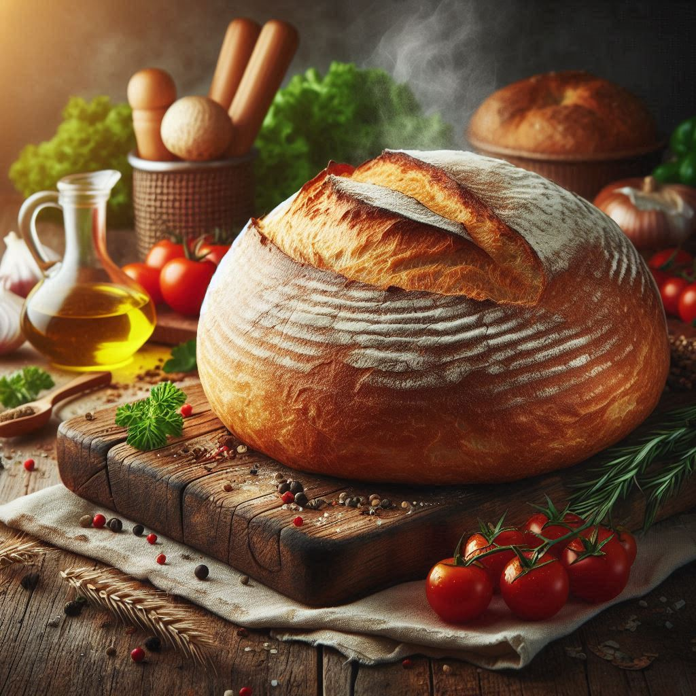

Home
Artisan Bread

Delicious artisan bread with herbs and spices
Delicious artisan bread just baked, amazing in sandwiches, with some spices and
olive oil or just by itself!
Ingredients
- 3 ¾ cups bread flour divided (450 grams)
- 2 ¼ teaspoons instant yeast
- 1 ¾ teaspoons kosher salt (10 grams)
- 1 ½ cups warm water between 120°F and 130°F (360 grams)
Steps
-
In a large mixing bowl, add flour, yeast, and salt, stirring to combine with a large
wooden spoon. Stir in water until the mixture is very sticky, and no lumps of flour remain.
Cover and place in a warm, draft-free area until doubled in size, about 1 ½ to 2 hours.
-
In a large mixing bowl, add flour, yeast, and salt, stirring to combine with a
large wooden spoon. Stir in water until the mixture is very sticky, and no lumps of
flour remain. Cover and place in a warm, draft-free area until doubled in size, about 1 ½ to
2 hours.
-
Preheat the oven to 450°F. Place a large Dutch oven with a lid in the oven for at least
30 minutes.
-
Remove the dough from the refrigerator and let rest at room temperature for 15 minutes.
-
Using lightly floured hands, reach down one side of the dough to the bottom of the bowl,
pull up, and stretch the edge of the dough over the center toward the opposite side.
Turn the bowl 90 degrees and repeat the folding and turning, working in a circle around the
dough until the dough starts to hold its shape, about 8 to 10 rotations. Pinch any seams
together at the center of the dough ball.
-
Turn out the dough onto a lightly floured surface, placing it seam side down. Shape into a
round loaf. Transfer the dough onto parchment paper and sprinkle it with flour. Loosely cover
with plastic wrap or a tea towel for 10 minutes.
-
Using a sharp knife or bread lame, cut a slit about ¼-inch deep across the top of the dough.
Very carefully place the dough with the parchment paper directly into the preheated Dutch oven.
Cover with the lid.
-
Bake for 30 minutes. Remove the lid and bake until deeply golden brown, about 15 to 17 minutes
more. Carefully remove the bread from the Dutch oven using the parchment paper to help, and
place on a wire rack to cool for at least 20 minutes before slicing.